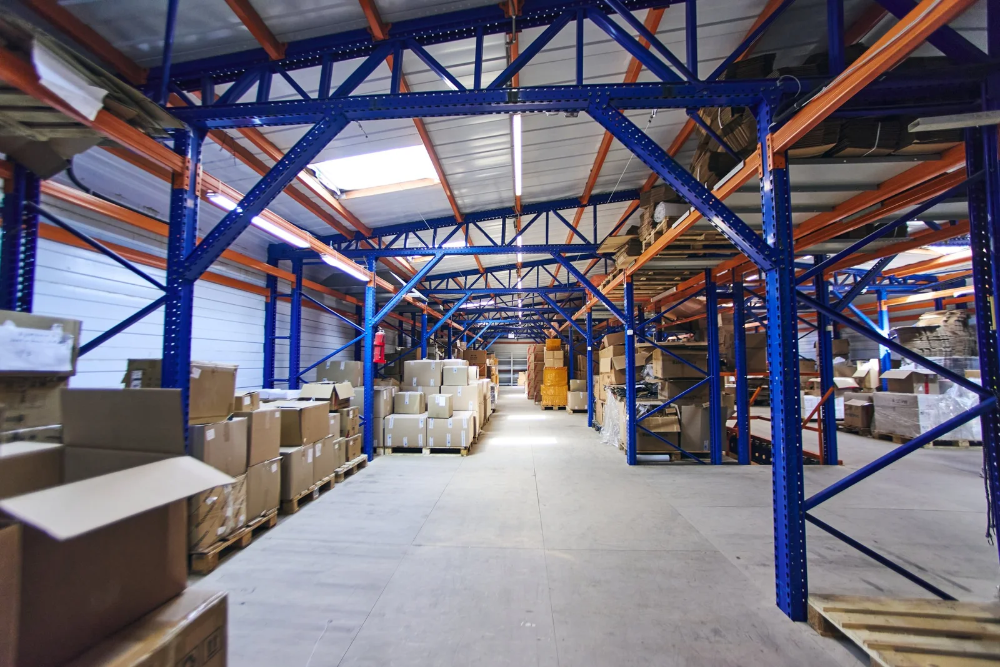
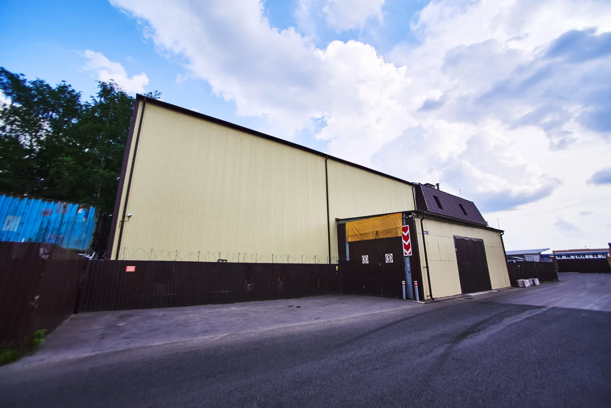
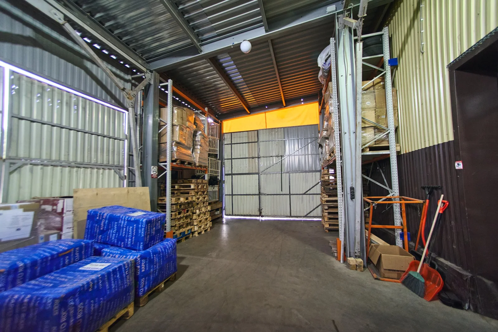
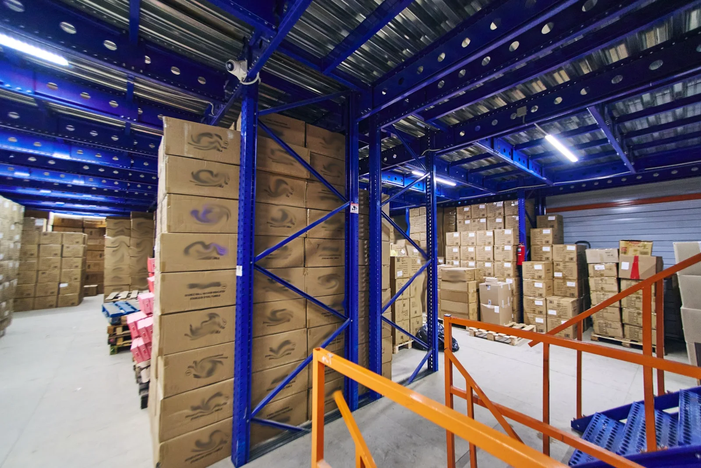
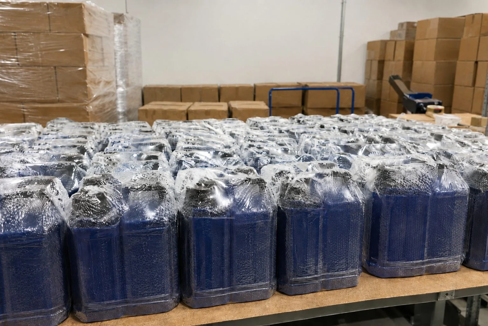

О Преп-Центре
Опубликовано: 22 августа 2026 · Обновлено: 21 октября 2026 · Восстановлено: 4 ноября 2026
Преп-Центр занимается фулфилментом и подготовкой товаров к продаже на маркетплейсах. На складе в Пушкино мы принимаем и храним товары, проверяем и сортируем их, упаковываем, маркируем, комплектуем наборы и формируем поставки.
Работаем с Ozon, Wildberries, Яндекс Маркет и другими маркетплейсами по схемам FBO и FBS. Берем как регулярную обработку заказов, так и отдельные партии, в том числе крупные и срочные.
Фактическая скорость обработки зависит от товара, объема партии и набора операций.

Фулфилмент, построенный вокруг реальной работы с товаром
Преп-Центр работает с поставщиками и селлерами, которым нужно передать складскую обработку товара одной команде: от приемки до готовой поставки на маркетплейс.
Особенно хорошо мы знаем категории, где ошибки в упаковке или маркировке обходятся дорого: шампуни и гели, косметику, бытовую, автомобильную и строительную химию, другие жидкие товары и продукцию с риском протечки. Также работаем с канцелярией, товарами для дома, наборами и многими другими категориями.
В зависимости от задачи выполняем:
- поштучную приемку и приемку по грузоместам;
- сортировку по SKU и проверку комплектности;
- проверку товара на видимый брак;
- упаковку в воздушно-пузырьковую пленку;
- термоусадочную упаковку;
- печать и нанесение этикеток маркетплейсов;
- работу с кодами маркировки «Честный знак»;
- комплектацию наборов и вложений;
- формирование коробов и паллет для FBO;
- обработку и отгрузку заказов по FBS;
- ответственное хранение, инвентаризацию, возвраты и переупаковку.
Для каждой партии состав операций определяется отдельно. Один товар достаточно промаркировать и отгрузить, другому нужна проверка флаконов, несколько слоев ВПП, термоусадка и новая этикетка поверх упаковки.
Склад Преп-Центра в Пушкино
Наш склад площадью 1560 м² находится по адресу: Московская область, г. Пушкино, ул. Новая, д. 10.
На складе есть зоны приемки и разгрузки, хранения, поштучной обработки товара, упаковки, комплектации и подготовки отгрузок. Мезонин и стеллажная система позволяют разделять товар по клиентам и задачам, а рабочие зоны используются как для обычных заказов, так и для поточной обработки крупных партий.
Товар можно привезти самостоятельно. Также организуем забор у поставщика, с карго или из транспортной компании.
Работаем ежедневно с 08:00 до 20:00.



Как товар проходит через Преп-Центр
-
Приемка
Получаем груз, принимаем по грузоместам или поштучно, идентифицируем товар и ставим его на складской учет. При необходимости снимаем транспортировочную упаковку и обрешетку.
-
Проверка и сортировка
Разделяем товар по SKU, пересчитываем, проверяем комплектность и выполняем согласованные операции контроля. Для жидких товаров отдельно могут проверяться крышки, дозаторы и состояние упаковки.
-
Подготовка и упаковка
Подбираем процесс под конкретный товар. Используем воздушно-пузырьковую пленку, термоусадочную пленку, пакеты, короба, ложементы и другие упаковочные материалы.
На складе работает автоматическая линия термоусадочной упаковки. Она позволяет организовывать поточную обработку крупных партий и при подходящем товаре и наборе операций достигать производительности до 20 000 единиц за 12-часовую смену.
-
Маркировка и комплектация
При сборке маркированных наборов связываем КИЗ вложений с кодом набора в WMS МПФИТ и передаем клиенту файл соответствий; для одной упакованной единицы доступно дублирование КИЗ снаружи.
Печатаем и наносим этикетки Ozon, Wildberries и других маркетплейсов, работаем со штрихкодами и кодами маркировки «Честный знак».
Комплектуем наборы из нескольких товаров, добавляем инструкции, визитки, дозаторы и другие вложения по техническому заданию клиента.
Подробнее об этикетках маркетплейсовПодробнее о «Честном знаке»
-
Отгрузка
Формируем поставки по требованиям маркетплейсов и передаем их в доставку. Работаем по FBO и FBS. FBS-заказы со склада Преп-Центра отправляются 2 раза в день.


Оборудование, складской учет и контроль
Фулфилмент требует учета каждой операции, особенно когда одновременно в работе находятся разные SKU и партии нескольких клиентов.
Складской учет Преп-Центра ведется в WMS МПФИТ. В личном кабинете клиент может видеть движение товара, остатки и выполненные складские операции.
Для поточной упаковки используется автоматическая линия термоусадки. На рабочих местах применяются принтеры этикеток и сканеры для маркировки и проверки кодов.
Склад оборудован круглосуточным видеонаблюдением более чем с 75 ракурсов. Камеры установлены в складских и рабочих зонах, в том числе над упаковочными столами. Видео помогает контролировать работу с товаром и разбирать спорные ситуации по конкретным операциям.
Подробнее: как мы используем WMS МПФИТ для учета, маркировки и отгрузок
Преп-Центр в цифрах
Реальные партии, реальные сроки
Возможности склада лучше всего показывают выполненные работы.
23 500 шампуней и гелей за 4 дня
Партия флаконов до 1 литра. Приемка, сортировка, комплектация дозаторами и визитками, упаковка в ВПП и термоусадочную пленку, маркировка и подготовка к отгрузке.
10 000 единиц бытовой химии за 3 дня
Приемка партии, сортировка, защитная упаковка, термоусадка и маркировка перед поставкой на маркетплейс.
Комплектация многокомпонентных наборов
Преп-Центр собирает наборы из нескольких позиций, контролирует комплектность, упаковывает готовый комплект и маркирует его для дальнейшей поставки.

На сайте опубликованы и другие кейсы с реальными фотографиями, объемами партий, выполненными операциями и сроками.
ООО «ПРЕП-ЦЕНТР»
Преп-Центр — бренд ООО «ПРЕП-ЦЕНТР». Юридическое лицо зарегистрировано в 2017 году, направление фулфилмента развивается с 2019 года.
Директор: Александр Анатольевич Альхов.
- Юридическое лицо
- ООО «ПРЕП-ЦЕНТР»
- ИНН
- 5038126700
- ОГРН
- 1175050003039
- КПП
- 775101001
- Юридический адрес
- 108801, г. Москва, вн. тер. г. муниципальный округ Коммунарка, б-р Скандинавский, д. 1, к. 2, помещ. 5Н
- Адрес склада
- Московская область, г. Пушкино, ул. Новая, д. 10
Юридический адрес компании и адрес действующего склада различаются. Для приема товаров, посещения склада и операционной работы используется адрес в Пушкино.
Приезжайте посмотреть склад
Фулфилмент лучше оценивать своими глазами. Можно приехать в Преп-Центр, посмотреть склад и рабочие зоны, обсудить свой товар и понять, как будет организована его приемка, упаковка, маркировка и отгрузка.
Если уже известны товар, объем партии и нужные операции, отправьте нам эти данные. Рассчитаем стоимость и предложим схему обработки.
Телефон: +7 (930) 600-75-20
E-mail: info@prep-center.ru
Адрес склада: Московская область, г. Пушкино, ул. Новая, д. 10
График: ежедневно с 08:00 до 20:00